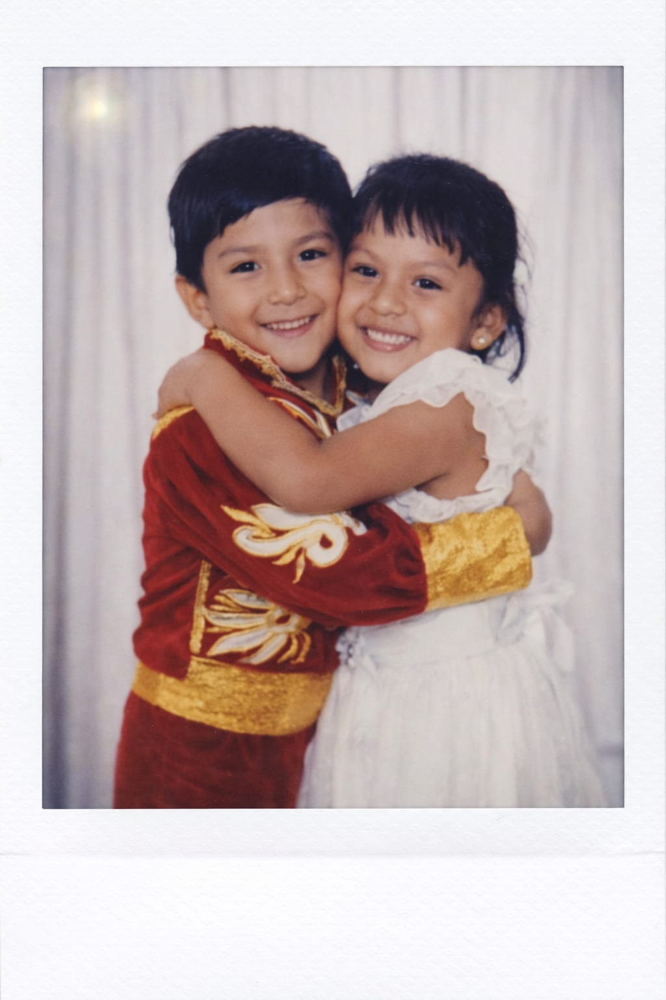

Pedro Infante - Cien Años 🎵
Mi amor hermoso,
Hoy estamos cumpliendo nuestro primer medio año juntos. Seis meses de estar juntos como enamorados, de cuidarnos, de aprender el uno del otro y de construir esto tan bonito que tenemos.
Pero sabes algo... esto apenas comienza. No quiero que nos quedemos solo en seis meses. Este es apenas el primer paso para estar juntos toda la eternidad. Quiero que este medio año se multiplique, que se convierta en 100 años a tu lado, como dice la canción.
Pasaste de ser una casualidad a ser la mujer con la que quiero compartir mi vida entera.
Te amo. Por 100 y miles de años más.
- Sergio ❤️
